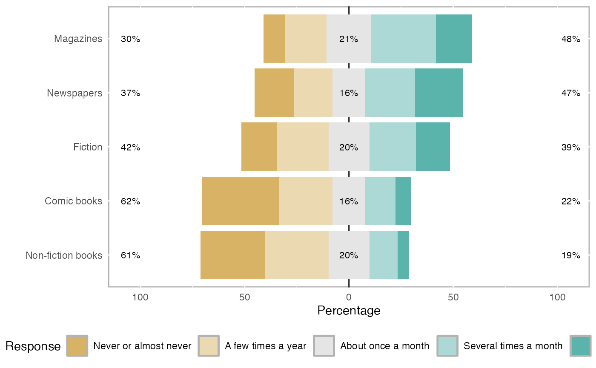

This function will provide various statistics about a set of likert items. The resulting object will have the following items:
likert(items, summary, grouping = NULL, factors = NULL, importance, nlevels)data frame containing the likert based items. The variables in the data frame should be factors.
a pre-summarized data frame. The first column must be the items and the remaining columns are the levels (e.g. strongly disagree, disagree, etc).
(optional) should the results be summarized by the given grouping variable.
a vector with length(factors) == ncol(items)
defining which factor each column belongs to. The values correspond
to the factor label.
a data frame of the same dimensions as items containing an importance rating for each item. The order of columns should match and the names from items will be used.
number of possible levels. Only necessary if there are missing levels.
a likert class with the following elements: results, items, grouping, nlevels, and summary.
results - this data frame will contain a column 'Item', 'Group' (if a
grouping variable was specified, and a column for each level of the
items (e.g. agree, disagree, etc.). The value within each cell corresponds
to the percentage of responses for that level and group.
items - a copy of the original items data frame.
grouping - a copy of the original grouping vector.
nlevels - the number of levels used in the calculations.
plot.likert
summary.likert
data(pisaitems)
items29 <- pisaitems[,substr(names(pisaitems), 1,5) == 'ST25Q']
names(items29) <- c("Magazines", "Comic books", "Fiction",
"Non-fiction books", "Newspapers")
l29 <- likert(items29)
summary(l29)
#> Item low neutral high mean sd
#> 1 Magazines 30.21689 21.33091 48.45219 3.254813 1.245086
#> 5 Newspapers 37.29377 15.72688 46.97935 3.140282 1.442299
#> 3 Fiction 41.77380 19.61739 38.60882 2.961111 1.342667
#> 2 Comic books 62.43096 15.78368 21.78536 2.298768 1.292631
#> 4 Non-fiction books 61.42466 19.55493 19.02042 2.322898 1.199176
plot(l29)
